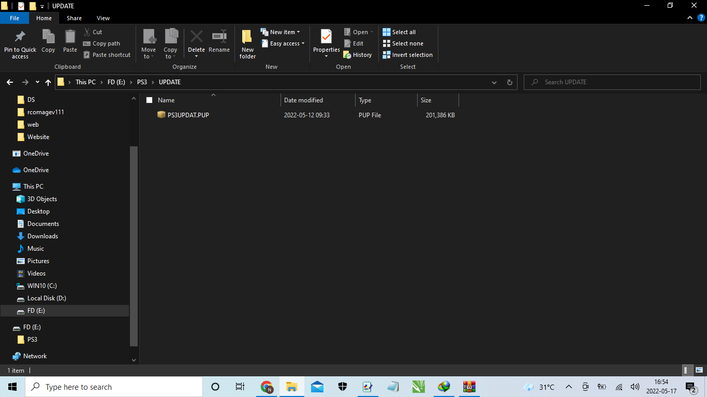

Pastikan Flasdisk / Harddisk berformat FAT32 (WAJIB)
Ekstrak file HFW 4.89.1 PRO
-Buat folder Bernama PS3
-Didalam folder PS3, buat lagi folder bernama UPDATE
-didalam folder UPDATE, Copykan file yang baru diesktrak yaitu PS3UPDATE.PUP
Urutannya yaitu (PS3 > UPDATE > PS3UPDAT.PUP)
